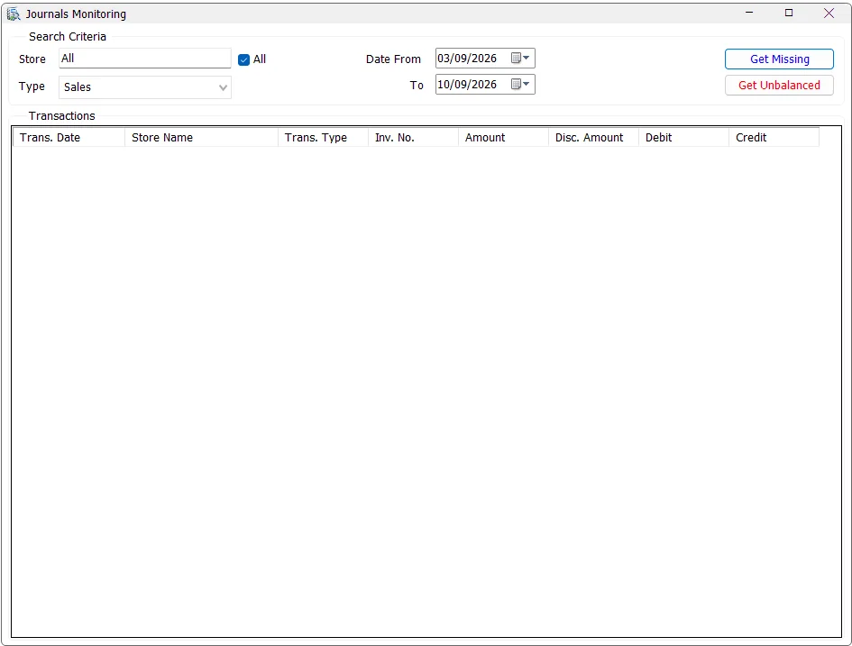

Journals Monitoring
Journals Monitoring is a diagnostic control for the IMS journal-preparation layer. It finds Sales or Stock Transfer transactions whose journal is missing, or transactions whose prepared Debit and Credit entries do not balance, and lets the finance user open the source transaction directly in Transactions Expert.

Search criteria
Select the transaction Type, Stores and Date From/To. The current monitor supports:
| Type | Transactions checked |
|---|---|
| Sales | Inventory sales/returns using transaction codes 51, 52, 53 and 54. |
| Stock Transfers | Active/non-deleted Stock Transfer transactions using code 81. |
The screen starts on Sales and defaults Date From to approximately seven days before today. The Store selector uses the standard IMS multi-selection behavior and only includes stores available to the user. If the user has access to exactly one store, IMS selects and locks that store automatically.
Store selection
Use All to check every available store, or click the Store field and choose one or several stores from the shared IMS list. No Ctrl key is required.
Get Missing
Get Missing finds an operational transaction for which IMS cannot find the matching prepared journal record.
| Type | Missing condition |
|---|---|
| Sales | A qualifying Sales/Return transaction exists in the sales header, but no matching entry exists in sic_journal for the same transaction code, store and invoice number. |
| Stock Transfers | A qualifying non-deleted/non-zero Stock Transfer exists, but no matching sic_journal record exists. |
If no missing rows are found, IMS reports that no missing transactions were found for the selected criteria.
Get Unbalanced
Get Unbalanced looks for transactions that do have prepared IMS journal lines but where the summed Debit is not equal to the summed Credit.
For unbalanced results the grid also displays the calculated Debit and Credit totals, making the size of the imbalance visible before opening the source transaction.
Result columns
| Column | Meaning |
|---|---|
| Trans. Date | Source transaction date. |
| Store Name | IMS store/center associated with the transaction. |
| Trans. Type | Sales/return or Stock Transfer transaction type. |
| Inv. No. | Source receipt/transfer voucher number. |
| Amount | Source transaction amount. |
| Disc. Amount | Discount amount recorded on the source transaction. |
| Debit / Credit | Prepared journal totals; populated for Get Unbalanced results. |
Open the source transaction
Select/click a result row. IMS opens that exact transaction in Transactions Expert using its Store, transaction code and invoice/voucher number. After Transactions Expert closes, Journals Monitoring automatically reruns the same Missing or Unbalanced check so the result reflects any correction that was made.
Typical finance-control workflow
- Choose Sales or Stock Transfers.
- Select the date range and required stores.
- Run Get Missing and investigate any source transactions returned.
- Run Get Unbalanced and review Debit versus Credit.
- Click a problem row to inspect/correct it through Transactions Expert.
- Return to Posting after the prepared journal data is complete and balanced.